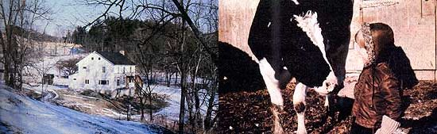

Report From Them That's Doin
Although he was initially skeptical, this MOTHER-reader later wrote to us for an idea that has helped his family realize their homestead dream.
I have to begin this tale by admitting that the first time I read Jim and Lou Hammill's article in MOTHER NO. 43, "We Live Rent-Free in the Smokies", I laughed out loud. A landlord would have to be bonkers to lease a house to someone without collecting any money, I thought. Labor for rent? I figured the Hammills must just have had a once-in-a-lifetime stroke of luck. Still, the article did plant an idea in the back of my mind.
I'm a married graduate student with two small children. My family lived (actually, existed might be more accurate) for three years in a small apartment . . . while I obtained a master's degree in horticulture at Purdue University. We really wanted to homestead, though, and read books on the subject, made lists, and planned. But the dream seemed to stay well ahead of the small amount of cash we could save from my graduate assistant's salary.
Still, when I finished at Purdue and planned to move on to Penn State to work for my doctorate, my wife and I decided at least to shop for a small place in the country. We looked, but could find only exorbitant prices and imposing interest rates.
Needless to say, we were depressed. But then I recalled the Hammills' article in issue 43 . . . and decided that their idea was worth a try. We quickly composed a classified advertisement for the county newspaper in the area where we'd been house-hunting: "WANTED TO RENT. NEED SEPTEMBER '80, country home 15 miles State College. Two, three bedrooms, garden, yard. Christian student/family. Rental preferred, purchase possible. Experienced handyman, will trade rent for repairs.
" We sent the ad off, waited, and prayed. The first response offered a rental for cash plus labor . . . but even then, the amount was more than our budget could afford. A second reply said we sounded like "nice people" (which we are!) . . . but the woman's house didn't need any work and was far too expensive for us to lease. We needed to pay most of our rent with sweat, not cash.
Offer number three was the charm, though. A man wrote to say he and his wife had just purchased a farm as an investment. The former owner had begun to do some remodeling but hadn't completed the job.
Well, to make a long story short, we visited the place and fell in love with it. It was exactly what we had wanted to buy but couldn't afford. (Actually, that's not quite true . . . the homestead was better than any we'd ever dreamed of owning.) There were grapevines, apple trees, a huge yard, garden space, two creeks, a barn, and a pasture. The two-story farmhouse featured five bedrooms and had a woodburner . . . and there was even a timber lot from which to harvest fuel for the heater!
I must admit that I was a bit concerned about the 60-mile round trip to school every day that living on the dream farm would neccessitate. We soon decided the trade-off was well worthwhile, however, and worked up a rental agreement with our landlords: At least half of the rent each month would be paid with labor. We initially gave the owners one month's payment in cash, so that-from then on-any work we accomplished would be deducted (at an agreed-upon hourly rate) from the following month's rent.
Naturally, it would be in our best interest to work all the rent off, but my studies don't allow me that much time to spend on the remodeling jobs. As it stands now, each month's payment includes 34 hours of labor . . . which keeps me busy for about three Saturdays every month. Our landlords provide all the necessary building supplies, and if we ever need to buy any "last minute" items, we simply deduct the costs from the cash portion of the next month's rent. We've found that the setup works very well, particularly when we keep accurate records of time and materials.
Everything has rolled along smoothly so far. We've already ripped out an old porch and used the wood to make compost bins . . . done a lot of painting and wiring work . . . and spent a few weekends cutting our woodstove "fodder". A nearby farmer volunteered to plow our quarter-acre garden space "just to be a good neighbor" . . . and so-for the same reason-I gave him a goodly supply of winter squash at the end of the season.
Furthermore, shortly after we had moved to the farm, a friend of our landlords began to board her horse with us. In return for our keeping an eye on the animal and feeding it whenever she can't come over, the owner supplies us with fresh, tasty goat's milk.
Not long thereafter we learned that another of the owners' friends needed a place to pasture his small herd of cattle. We jumped at the chance to be able to practice livestock tending without having the financial responsibility! And not only did the man bring five beef steers . . . he brought a Holstein cow and calf, 24 banty chickens, and eight cats as well!
My wife and I have, since that day, learned to milk and give vaccinations (we doctored the youngest Hereford through pneumonia), and now possess what we like to call "a farmer's eye". . . which has enabled us (so far) to spot livestock problems before they get serious. The Holstein provides us with all the milk we can drink- plus plenty of butter and cottage cheese-and feeds the cats and calf. We also deliver three gallons of milk to our landlords each week . . . and they deduct the price from our rent. What's more, the bantams have begun to lay, and those fresh eggs are welcome additions to our larder!
Some series of swaps, huh? And the idea came from you, MOTHER. We want to thank you so much, because the original trade (and your magazine) allowed us to live on a homestead we couldn't have hoped to see for years . . . without either the mortgage we expected to pay or the cash outlay we thought inevitable. And, probably best of all, we're getting a farmer's education for free . . . as well as making good friends along the way!
|
 LEFT: The Grazzini family's ""labor for rent "" homestead. RIGHT: Benjamin, aged three, makes friends with a placid milk cow. |
|
|